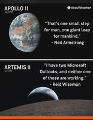
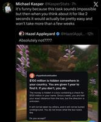
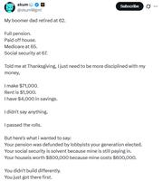

0
0
An anonymous reader quotes a report from Ars Technica: The Trump administration has stepped up an effort to unmask a Reddit user who criticized Immigration and Customs Enforcement (ICE). After failing to obtain information through a summons issued (PDF) to Reddit, the government reportedly issued a subpoena demanding that Reddit provide the information and appear before a grand jury in Washington, DC. The Intercept described the subpoena today. "According to a subpoena obtained by The Intercept, Reddit has until April 14 to provide a wide range of personal data on one of its users, whom US Immigration and Customs Enforcement agents have been trying unsuccessfully to identify for more than a month," the article said.
The legal saga began in US District Court for the Northern District of California. On March 12, the anonymous Reddit user whose information is being sought filed a motion (PDF) to quash a summons seeking a host of information from Reddit. The summons was issued by the Department of Homeland Security and directed Reddit to turn information over to an ICE senior special agent. The summons cited authority under 19 U.S. Code 1509, which is part of the Smoot-Hawley Tariff Act of 1930. The motion to quash said the summons is not authorized by the law, which deals with imports of boats, alcoholic drinks, and animals, among other things.
"J. Doe is a US citizen who has not traveled out of the country, is not engaged in any international commerce, has no business concerns outside the United States, and primarily uses their Reddit account to engage in political speech relevant to their local community," said the filing by the Civil Liberties Defense Center (CLDC), which represents the Reddit user. "Yet the government claims the right to obtain Doe's name, telephone number, home address, banking and credit card information, IP addresses, telephone model number(s), and the names of any other accounts associated with their Reddit account. The information sought by the government in no way pertains to customs or importing or exporting merchandise, and is clearly intended to chill free speech." "We should be very, very, very concerned that they've now taken one of these to a grand jury," said David Greene, senior counsel for the Electronic Frontier Foundation. "It's something to be taken very seriously."
A Reddit spokesperson told Ars today that "we seek to inform users of any legal process compelling disclosure of their data, as we did in this case, because users should have the agency to protect their own information and are often better positioned to challenge requests that impact them."
"We do not voluntarily share information with any government, especially not on users exercising their rights to criticize the government or plan a protest. We review every inquiry for legal sufficiency and routinely object to requests that are overbroad or threaten civil rights. When legally compelled to disclose data, we provide only the minimum required and notify the user whenever possible so they can defend their interests."
Read more of this story at Slashdot.
Bruce66423 shares a report from the Guardian: The European parliament has blocked the extension of a law that permits big tech firms to scan for child sexual exploitation on their platforms, creating a legal gap that child safety experts say will lead to crimes going undetected. The law, which was a carve-out of the EU Privacy Act, was put in place in 2021 as a temporary measure allowing companies to use automated detection technologies to scan messages for harms, including child sexual abuse material (CSAM), grooming and sextortion. However, it expired on April 3, and the EU parliament decided not to vote to extend it, amid privacy concerns from some lawmakers.
The regulatory gap has created uncertainty for big tech companies, because while scanning for harms on their platforms is now illegal, they still remain liable to remove any illegal content hosted on their platforms under a different law, the Digital Services Act. Google, Meta, Snap and Microsoft said they would continue to voluntarily scan their platforms for CSAM, in a joint statement posted on a Google blog. Bruce66423 adds: "Child abuse as the excuse for avoiding privacy protections. Who would have thought it?"
Read more of this story at Slashdot.
San Francisco police arrested a suspect after a Molotov cocktail was allegedly thrown at Sam Altman's home and threats were later made outside OpenAI's headquarters. "Thankfully, no one was hurt," said OpenAI in a statement to WIRED. "We deeply appreciate how quickly SFPD responded and the support from the city in helping keep our employees safe. The individual is in custody, and we're assisting law enforcement with their investigation." From the report: "At approximately 3:45am PT, an unidentified individual approached Sam's residence and threw an incendiary device toward the property. The device landed nearby and extinguished. There were no injuries and only minimal damage was reported," the message to staff reads. "Shortly afterward, an individual matching the suspect's description was contacted by security outside MB1," the message continues, referring to OpenAI's headquarters in San Francisco's Mission Bay neighborhood. "This person made threatening statements about the building."
OpenAI's corporate security team told staff it is cooperating with law enforcement on an investigation, and that employees may notice an increased police and security presence around the office on Friday. The security team said that the company's offices remain open, but employees were advised to "not let anyone tailgate into the building." UPDATE: Sam Altman has responded to the incident.
Read more of this story at Slashdot.
An anonymous reader quotes a report from 404 Media: The FBI was able to forensically extract copies of incoming Signal messages from a defendant's iPhone, even after the app was deleted, because copies of the content were saved in the device's push notification database, multiple people present for FBI testimony in a recent trial told 404 Media. The case involved a group of people setting off fireworks and vandalizing property at the ICE Prairieland Detention Facility in Alvarado, Texas in July, and one shooting a police officer in the neck. The news shows how forensic extraction -- when someone has physical access to a device and is able to run specialized software on it -- can yield sensitive data derived from secure messaging apps in unexpected places. Signal already has a setting that blocks message content from displaying in push notifications; the case highlights why such a feature might be important for some users to turn on.
"We learned that specifically on iPhones, if one's settings in the Signal app allow for message notifications and previews to show up on the lock screen, [then] the iPhone will internally store those notifications/message previews in the internal memory of the device," a supporter of the defendants who was taking notes during the trial told 404 Media. [...] During one day of the related trial, FBI Special Agent Clark Wiethorn testified about some of the collected evidence. A summary of Exhibit 158 published on a group of supporters' website says, "Messages were recovered from Sharp's phone through Apple's internal notification storage -- Signal had been removed, but incoming notifications were preserved in internal memory. Only incoming messages were captured (no outgoing)."
404 Media spoke to one of the supporters who was taking notes during the trial, and to Harmony Schuerman, an attorney representing defendant Elizabeth Soto. Schuerman shared notes she took on Exhibit 158. "They were able to capture these chats bc [because] of the way she had notifications set up on her phone -- anytime a notification pops up on the lock screen, Apple stores it in the internal memory of the device," those notes read. The supporter added, "I was in the courtroom on the last day of the state's case when they had FBI Special Agent Clark testifying about some Signal messages. One set came from Lynette Sharp's phone (one of the cooperating witnesses), but the interesting detailed messages shown in court were messages that had been set to disappear and had in fact disappeared in the Signal app." Further reading: Apple Gave Governments Data On Thousands of Push Notifications
Read more of this story at Slashdot.
Futurism found that Google News is surfacing Polymarket betting pages alongside traditional news sources. "The bets often appear in the 'For you' section of Google News, which is tailored to a user's personal interests," the publication reports. "In one instance, it was even the very top result, as with this bet on the price of Bitcoin." From the report: In our testing, Polymarket bets are also showing up on the Google News home page. But links from the prediction market can pop up all over Google News, including in searches. In further tests, looking up "will ships transit the strait," referring to the Strait of Hormuz, returned numerous credible sources like Financial Times, The Guardian, and Reuters. Just below them, however, was a Polymarket bet on the number of ships that would be allowed to pass through the critical oil passageway.
This doesn't appear to be an accident. When searching "Polymarket" in its search bar, Google News now allows users to choose it as a "source," directing them to a page that aggregates other Polymarket hits. It's not the only non-news site that's selectable as a source -- looking up "Reddit" and "X" offers the option, too -- but searching for "Kalshi," another prediction market and Polymarket's main competitor, doesn't give the option to use it as a source. [...] In light of all this, Polymarket appearing in Google News is a major victory for the prediction platform -- rubber-stamping its image as an authority on developing real-world events right alongside genuine real publishers of journalism.
Read more of this story at Slashdot.
France says it plans to move some government computers from Windows to Linux as part of a broader push for digital sovereignty and reduced dependence on U.S. technology. TechCrunch reports: In a statement, French minister David Amiel said (translated) that the effort was to "regain control of our digital destiny" by relying less on U.S. tech companies. Amiel said that the French government can no longer accept that it doesn't have control over its data and digital infrastructure. The French government did not provide a specific timeline for the switchover, or which distributions it was considering. Microsoft did not immediately comment on the news.
[...] France's decision to ditch Windows comes months after the government announced it would stop using Microsoft Teams for video conferencing in favor of French-made Visio, a tool based on the open source end-to-end encrypted video meeting tool Jitsi. The French government said it also plans to migrate its health data platform to a new trusted platform by the end of the year.
Read more of this story at Slashdot.
An anonymous reader quotes a report from The Drive: An auto dealer software company is pitching AI-powered kiosks designed to replace car salesmen on showroom floors. Automotive News says the industry is "skeptical." But be honest -- would you really rather deal with the average car lot shark than a computer?
Epikar, a South Korean company that cooks up digital management solutions for car dealers, has named its new AI invention the Pikar Genie. The idea is that customers can talk to this device, ask it product questions, and basically do everything you'd do with a car salesman except for actually closing the deal and signing paperwork. Renault, BMW, and Volvo are already using some Epikar products at South Korean dealerships, but this new customer-facing AI product is still in its infancy.
AN reported that "Renault assigns three salespeople to its Seoul showroom enhanced with Epikar automation compared with six for other Renault showrooms in South Korea," according to Epikar CEO Bosuk Han. The company's now looking to expand into America and is apparently already testing its products at at least one dealership stateside. Car-dealer consultant Fleming Ford (Director of Strategic Growth at NCM Associates) said U.S. dealerships "aren't ready for fully automated showrooms."
"The showroom isn't just where you buy a car," Automotive News quoted him saying. "It's where you decide who to trust to help you to choose the right car."
Read more of this story at Slashdot.
Attackers briefly hijacked part of CPUID's backend and swapped legitimate download links on its site with malware-laced ones. "The issue hit tools like HWMonitor and CPU-Z, with users on Reddit and elsewhere starting to notice something wasn't right when installers tripped antivirus alerts or showed up under odd names," reports The Register. From the report: CPUID has since confirmed the breach, pinning it on a compromised backend component rather than tampering with its software builds. "Investigations are still ongoing, but it appears that a secondary feature (basically a side API) was compromised for approximately six hours between April 9 and April 10, causing the main website to randomly display malicious links (our signed original files were not compromised)," one of the site's owners said in a post on X. "The breach was found and has since been fixed."
The files themselves appear to have been left alone and remain properly signed, so it doesn't seem like anyone got into the build process. Instead, the problem sat in front of that, in how downloads were being served. For anyone who hit the site during that stretch, though, that distinction offers little comfort. If the link you clicked had been swapped out, you were pulling whatever it pointed to, whether you realized it or not.
Read more of this story at Slashdot.
An anonymous reader quotes a report from the New York Times: As the Trump administration seeks to fill a national shortage of air traffic controllers, officials are targeting a new talent pool: gamers. The Federal Aviation Administration on Friday is making a recruiting push aimed at avid players of video games, as the agency strives to fill thousands of vacancies that lawmakers have said leave the traveling public less safe. In a new YouTube ad, the agency is using flashy graphics and the promise of six-figure salaries to convince video game enthusiasts to apply their trigger fingers in service of air safety.
In recent years, video gamers have emerged as a target demographic for recruiters at a number of federal agencies, including the military and the Department of Homeland Security. They are welcomed for their hand-eye coordination, quick decision-making in complex environments and ability to remain focused on screens for hours on end. "To reach the next generation of air traffic controllers, we need to adapt," Transportation Secretary Sean Duffy said in a statement. Focusing recruiting efforts on gamers, he added, "taps into a growing demographic of young adults who have many of the hard skills it takes to be a successful controller."
[...] The F.A.A. plans to begin prioritizing recruiting gamers over more traditional avenues like college fairs, officials said, pointing out that only 25 percent of controllers have a traditional college degree, while the vast majority appear to have logged hours gaming. During the presidential transition in 2024, incoming Trump administration officials polled about 250 new air traffic academy graduates over six weeks. Only two of those interviewed were not gamers, according to F.A.A. officials [...]. Students who failed out of the training academy were not similarly queried, officials said, though they have plans to conduct more comprehensive exit interviews in the future. Still, the overwhelming presence of gaming habits among graduates tracked with what they were hearing anecdotally from controllers already certified to work in towers and other air traffic facilities, the officials said, many of whom liked to play video games during breaks in their shifts.
Read more of this story at Slashdot.
NASA's Artemis II crew safely splashed down off the California coast after completing a 10-day trip around the moon and back. "This is not just an accomplishment for NASA," sad NASA Administrator Jared Isaacman. "This is an accomplishment for humanity, again, a historic mission to the moon and back." From a report: Isaacman is aboard the USS John. P Murtha Navy recovery vessel, where the astronauts will be brought once they've been retrieved from the Orion capsule, and he shared "there is a lot to celebrate right now on on a mission well accomplished for Artemis II."
Isaacman also complimented the crew as "absolutely professional astronauts, wonderful communicators and almost poets" "" as well as "ambassadors from humanity to the stars." "I can't imagine a better crew than the Artemis II crew that just completed a perfect mission right now. We are back in the business of sending astronauts to the moon and bringing them back safely.
This is just the beginning. We are going to get back into doing this with frequency, sending missions to the moon until we land on it in 2028 and start building our base." Isaacman also said it's time to start preparing for Artemis III, expected to launch in 2027. You can watch the moment of the splashdown here.
Read more of this story at Slashdot.
Researchers say the world's largest known wild chimpanzee community in Uganda fractured into rival factions and has been locked in a vicious "civil war" for the last eight years. "It is not clear exactly why the once close-knit community of Ngogo chimpanzees at Uganda's Kibale National Park are at loggerheads, but since 2018 the scientists have recorded 24 killings, including 17 infants," reports the BBC. From the report: [O]ver several decades, [lead author Aaron Sandel] said the nearly 200 Ngogo chimpanzees had lived in harmony. There were divided into two sets - known to researchers as Western and Central - but they had existed overall as a cohesive group. Sandel said he first noticed them polarizing in June 2015, when the Western chimpanzees ran away and were chased by the Central group. "Chimpanzees are sort of melodramatic," he said, explaining that following arguments there would ordinarily be "screaming and chasing" and then later, they would grooming and co-operating.
But following the 2015 dispute, the researchers saw that there was a six-week avoidance period between the two sets, with interactions becoming more infrequent. When they did occur, Sandel said they were "a little more intense, a little more aggressive." Following the emergence of the two distinct groups in 2018, members of the Western group started attacking the Central chimpanzees. In 24 targeted attacks since the split, at least seven adult males and 17 infants from the Central chimps have been killed, the study found, although the researchers believe the actual number of deaths are higher. The researchers believe many factors such as the group size and subsequent competition of resources, and "male-male competition" for reproducing may be to blame.
But they say there were three likely catalysts:
- The first, were the deaths of five adult males and one adult female -- for reasons unknown -- in 2014, which could have disrupted social networks and weakened social ties across the subgroups
- The following year, there was a change in the alpha male, which the study says coincided with the first period of separation between the Western and Central groups. "Changes in the dominance hierarchy can increase aggression and avoidance in chimpanzees," it explained
- The third factor was the deaths of 25 chimpanzees, including four adult males and 10 adult females, as a result of a respiratory epidemic, in 2017, a year before the final separation. One of the adult males who died was "among the last individuals to connect the groups," the research paper said. The study has been published in the journal Science.
Read more of this story at Slashdot.
Gmail's end-to-end encryption is now available on all Android and iOS devices, letting enterprise users send and read encrypted emails directly in the app without any extra tools. "This launch combines the highest level of privacy and data encryption with a user-friendly experience for all users, enabling simple encrypted email for all customers from small businesses to enterprises and public sector," Google announced in a blog post. BleepingComputer reports: Starting this week, encrypted messages will be delivered as regular emails to Gmail recipients' inboxes if they use the Gmail app. Recipients who don't have the Gmail mobile app and use other email services can read them in a web browser, regardless of the device and service they're using.
[...] This feature is now available for all client-side encryption (CSE) users with Enterprise Plus licenses and the Assured Controls or Assured Controls Plus add-on after admins enable the Android and iOS clients in the CSE admin interface via the Admin Console. Gmail's end-to-end encryption (E2EE) feature is powered by the client-side encryption (CSE) technical control, which allows Google Workspace organizations to use encryption keys they control and are stored outside Google's servers to protect sensitive documents and emails.
Read more of this story at Slashdot.
Meta has started removing ads from law firms seeking clients for social media addiction lawsuits, just weeks after a jury found Meta and YouTube negligent in a landmark case involving harm to a young user. "Lawyers across the country now are seeking new plaintiffs, in the hopes of bringing a class action lawsuit that could result in lucrative verdicts," reports Axios. From the report: Axios has identified more than a dozen such ads that were deactivated today, some of which came from large national firms like Morgan & Morgan and Sokolove Law. Almost all of them ran on both Facebook and Instagram. Some also appeared on Threads and Messenger, plus Meta's Audience Network -- which distributes ads to thousands of third-party sites.
One such ad read: "Anxiety. Depression. Withdrawal. Self-harm. These aren't just teenage phases -- they're symptoms linked to social media addiction in children. Platforms knew this and kept targeting kids anyway." A few of the ads still remain active, including some that were posted earlier today. "We're actively defending ourselves against these lawsuits and are removing ads that attempt to recruit plaintiffs for them," a Meta spokesperson said in a statement. "We will not allow trial lawyers to profit from our platforms while simultaneously claiming they are harmful."
Read more of this story at Slashdot.
Microsoft has started stripping Copilot branding out of Notepad in Windows 11, replacing the old Copilot menu with a more generic "writing tools" label. The AI features themselves aren't going away, but Microsoft seems to be backing off the heavy-handed Copilot branding and extra entry points. Windows Central reports: As promised, Microsoft is now beginning its effort to reduce and remove Copilot branding across Windows 11, with the latest Notepad update for Insiders outright removing the Copilot icon and phrasing. Now, the AI menu is simply called "writing tools," and maintains the same functionality as before. Additionally, Microsoft has also removed references to AI in the Settings area in Notepad. Now, the ability to turn on or off these AI powered writing tools are now listed under "Advanced features."
This change is present in the latest preview build of Notepad which is now rolling out to all Windows Insiders. The app version is 11.2512.28.0, and you'll know you have it if you see the Copilot icon replaced with a pen icon instead. [...] For Notepad, it appears Microsoft has opted to replace the Copilot menu with something more generic. It's still the same functionally, but it's no longer leaning on the tainted Copilot brand. Of course, you can still easily turn off all AI features in Notepad if you don't want them. The Verge reports that the "unnecessary Copilot buttons" are also disappearing from the Snipping Tool, Photos, and Widgets.
Read more of this story at Slashdot.
Longtime Slashdot reader fahrbot-bot shares a report from NewScientist: According to quantum chromodynamics (QCD) -- widely considered to be our best theory for describing the strong force, which binds quarks inside protons and neutrons -- even a perfect vacuum isn't truly empty. Instead, it is filled with short-lived disturbances in the underlying energy of space that flicker in and out of existence, known as virtual particles. Among them are quark-antiquark pairs. Under normal conditions, these fleeting pairs vanish almost as soon as they appear. But if enough energy is injected into a vacuum, QCD predicts they can be promoted into real, detectable particles with measurable mass. Now, the STAR collaboration -- an international team of physicists working at the Relativistic Heavy Ion Collider in Brookhaven National Laboratory in New York state -- has observed this process for the first time.
The team smashed together high-energy protons in a vacuum, producing a spray of particles. Some of these particles should be quark-antiquark pairs pulled directly from the vacuum itself, but quarks can never exist alone and immediately combine into composite particles. Quarks and antiquarks are born with their spins correlated -- a shared quantum alignment inherited from the vacuum. The researchers found that this link persists even after the quarks and antiquarks become part of larger particles called hyperons, which decay in less than a tenth of a billionth of a second. Spotting these spin-aligned hyperons in the aftermath of the proton collisions allowed the researchers to confirm that the quarks within them came from the vacuum. The findings have been published in the journal Nature.
Read more of this story at Slashdot.
Mari Kiyohara / Bloomberg : Japan approves an additional $4B in subsidies to Rapidus to bankroll the chipmaker's work for Fujitsu, taking the total state investment and fees to $16.3B — Japan approved ¥631.5 billion ($4 billion) in additional subsidies to quicken Rapidus Corp.'s entry into the high-stakes AI chipmaking arena …
The Citizen Lab : An investigation details Webloc, an ad-based geo surveillance system providing access to a constantly updated stream of records from up to 500M mobile devices — Location data collected from mobile apps and digital advertising can reveal habits, interests and almost any other aspect of someone's life.
Bradley S. Klein / Wall Street Journal : How AI is transforming golf: optimizing course operations, virtual assistants handling tee time bookings, and AI instructor apps improving player performance — From reserving a tee time to fending off turf disease, artificial intelligence is putting the game under an algorithmic microscope
Robert Burnson / Bloomberg : Court filing: OpenAI says Elon Musk's recent amendments to his OpenAI lawsuit are a “legal ambush”, calling them “legally improper and factually unsupported” — OpenAI says Elon Musk has suddenly changed direction on what he's seeking in his lawsuit against the startup in a …
Clara Murray / Financial Times : Ramp data: 30.6% of US businesses paid for Anthropic's tools in March, up from 24.4% in February; OpenAI's US business adoption remained nearly flat MoM at ~35% — Divergence reflects company's recent rapid growth owing to strong interest in its Claude Code products
Reuters : Indian IT giant TCS reports Q4 sales up 9.7% YoY to $7.63B, net profit up 12.2% to $1.48B, both above est., and says new AI models did not hurt services demand — Tata Consultancy Services (TCS.NS) reported better-than-expected quarterly results on Thursday and said that new artificial intelligence models …
Yang Jie / Wall Street Journal : UK activist investor Palliser has built a stake in Ajinomoto, urging it to raise prices for its ABF, a key material used to form advanced chipmaking substrates — Its shares surged in February and is up over 40% year to date — An activist investor has built a stake in a Japanese company …
Matthew Martin / Semafor : Alat, a $100B Saudi Arabia PIF-backed electronics manufacturing fund, has removed CEO Amit Midha; sources say it has dropped plans to invest in chip production — The Scoop — Know More — Notable — THE SCOOP — Saudi Arabia's sovereign wealth fund has dismissed Alat CEO Amit Midha …
Sam Sabin / Axios : OpenAI says a GitHub workflow used to sign its macOS apps downloaded a malicious Axios library on March 31, but no user data or internal system was compromised — OpenAI said Friday that it found evidence that one of its internal tools downloaded a compromised update from a recently infected, legitimate open-source software library.
Bloomberg : Sources: three senior executives who helped launch OpenAI's Stargate initiative are leaving the company and joining Meta — Three key players in OpenAI's massive effort to set up hundreds of billions of dollars' worth of artificial intelligence data center capacity are joining Meta Platforms Inc. …
Jack Queen / Reuters : The US CFTC says a district court judge granted its request for a temporary restraining order barring Arizona from continuing its criminal case against Kalshi — A federal judge on Friday blocked Arizona from continuing its criminal case against prediction market Kalshi …
Wall Street Journal : Sources: US National Cyber Director Sean Cairncross is leading an effort to identify security vulnerabilities in critical infrastructure that AI could exploit — Group led by National Cyber Director Sean Cairncross aims to identify security vulnerabilities before models from Anthropic, OpenAI are released
Reuters : Report: Canada's Cohere and Germany's Aleph Alpha are in talks to merge; the German government would be willing to become a key customer of a combined company — Artificial intelligence companies Cohere of Canada and Aleph Alpha of Germany are in talks to merge and have Berlin's support …
Sam Altman : Sam Altman reflects on the attack on his house, OpenAI's success, personal regrets, and advocates for de-escalating rhetoric and tactics in the AI industry — Here is a photo of my family. I love them more than anything. — Images have power, I hope. Normally we try to be pretty private …
Michael Kan / PCMag : Amazon Luna is dropping support for game purchases and third-party game stores and subscriptions; previously purchased games will be accessible until June 10 — The Luna game-streaming service is getting an overhaul, with Amazon pulling the plug on game purchases and hosting third-party game stores and subscriptions.